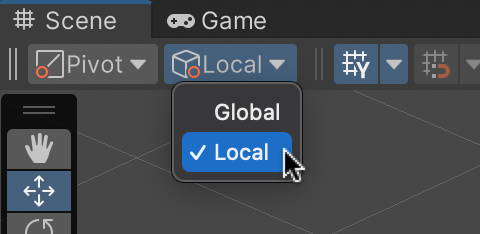

ゲームオブジェクト間に「親子関係」を設定すると、親を移動させたり回転させたりするだけで子供も自動的に移動したり回転したりするようにできます。
この際に「ワールド座標系」「ローカル座標系」という新しい概念も出てきますので併せて説明します。
親子関係の設定について説明する前にまず立方体を2つ作ります。
以下の手順に従って画面上に配置して下さい。
ヒエラルキー右クリック → 3D Object → Cube で立方体を新規作成し、名前を「OYA」、Position を (1,1,0) 、rotation を (0,0,45)にし、HAKO Materialを使って赤色にする
同様にヒエラルキー右クリック → 3D Object → Cube で立方体を新規作成し、名前を「KO」、Position を (0,0,0) 、rotation を (0,0,0)にし、HAKO2 Materialを使って青色にする
ここまでで次の様な画面になります。
図1. OYA(赤) と KO(青) を作成

次に以下の様にして OYA を親、KO を子供に設定します。
ヒエラルキーの KO を OYA の上にドロップする
すると OYA の右下に KO が移動して親子関係になり(図1)、OYA の Position や Rotation の値を変更すると HAKO も一緒に移動するようになります。
試しに OYA の Position や Rotation を変更してみて下さい。
図2. OYA と KO を親子関係にする

ヒエラルキーの直下にあるゲームオブジェクト、例えば今回の場合なら OYA の座標や回転角度(PositionとRotation)の事を「ワールド座標系」と言います。
ワールド座標系については今までも散々扱ってきたので特に説明はいらないと思います。
親子関係で子供のゲームオブジェクトの座標の座標や回転角度(PositionとRotation)の事を「ローカル座標系」と言います。
ローカル座標系は親の座標や回転角度を基準にして決まる相対的な座標となります。
と言ってもピンと来ないと思いますので具体的に演習しながら説明していきます。
まず OYA の Position を (1,1,0) 、rotation を (0,0,45) に戻し、ヒエラルキーの KO をクリックして KO の Positoin と Rotation を表示して下さい(図3)。
最初 KO を作った時は Position を (0,0,0) 、rotation を (0,0,0)にしたはずなのに異なる数値になっていると思います。
図3. KO の座標と回転角度(ローカル座標系)
この様な数値になった理由はこの値が OYA を親とするローカル座標系内の数値を表しているからです。
では OYA を親とするローカル座標系はどの様なものなのか実際に見てみましょう。
まずシーンビューやゲームビューのタグがある下のツールバーの中から「Global」と書いてあるメニューを見つけ、「Local」に変更します(図4)。
図4. ローカル座標系への表示切替

その後ヒエラルキーで OYA を選択し、操作ツールの移動ツール(十字架の様なアイコン)をクリックすると OYA の上に矢印が 3 本表示されますが、シーンギズモの矢印と方向がズレている事が分かります(図5)。
シーンギズモの矢印の方向がワールド座標系の XYZ 軸、OYA に付いている矢印がローカル座標系の XYZ 軸の方向となります。
また OYA に付いている矢印の中心がローカル座標系の原点になります。
図5. ローカル座標系の表示
図5 より、KO は OYA を親とするローカル座標系の X 軸(見辛いですが赤い矢印の方向)に関して原点から $-\sqrt{2}=-1.41421$ の位置にあり、さらにローカル座標系の Z 軸(青い矢印)を中心として -45 度回転していることが分かります。
なおローカル座標系は親のワールド座標系に依らないことに注意して下さい。
例えば OYA の Position や Rotation を適当に変更してみましょう。
すると OYA と KO は指定した場所に一緒に移動しますが、KO の Position や Rotation は 図3 の数値のままであることが分かります。
この様に、子供の座標をローカル座標系で指定することでプログラマーや 3D モデラーは親の座標を気にせずに子供に対する作業を続けることが出来るようになります。